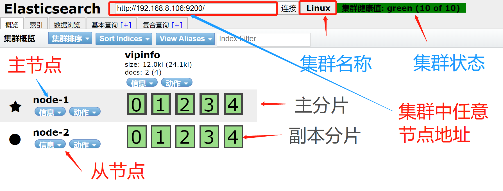

Elasticsearch 集群
官网地址：https://www.elastic.co/guide/en/elasticsearch/reference/current/cluster-health.html
Elasticsearch 可以横向扩展至数百(甚至数千)的服务器节点，同时可以处理PB级数据 Elasticsearch 天生就是分布式的，并且在设计时屏蔽了分布式的复杂性。 Elasticsearch 尽可能地屏蔽了分布式系统的复杂性。 这里列举了一些在后台自动执行的操作: 分配文档到不同的容器 或 分片中,文档可以储存在一个或多个节点中 按集群节点来均衡分配这些分片，从而对索引和搜索过程进行负载均衡 复制每个分片以支持数据冗余，从而防止硬件故障导致的数据丢失 将集群中任一节点的请求路由到存有相关数据的节点 集群扩容时无缝整合新节点，重新分配分片以便从离群节点恢复
一个运行中的 Elasticsearch 实例称为一个 节点，而集群是由一个或者多个拥有相同 cluster.name 配置的节点组成,它们共同承担数据和负载的压力。 当有节点加入集群中或者从集群中移除节点时，集群将会重新平均分布所有的数据。
当一个节点被选举成为主节点时,它将负责管理集群范围内的所有变更,例如增加、删除索引,或者增加、删除节点等.而主节点并不需要涉及到文档级别的变更和搜索等操作,所以当集群只拥有一个主节点的情况下,即使流量的增加它也不会成为瓶颈.任何节点都可以成为主节点。我们的示例集群就只有一个节点,所以它同时也成为了主节点。
作为用户,我们可以将请求发送到 集群中的任何节点,包括主节点.每个节点都知道任意文档所处的位置,并且能够将我们的请求直接转发到存储我们所需文档的节点.无论我们将请求发送到哪个节点,它都能负责从各个包含我们所需文档的节点收集回数据,并将最终结果返回給客户端. Elasticsearch 对这一切的管理都是透明的。
安装
elasticsearch的集群安装方法和单节点的安装方法基本相同，唯一不同的是在集群中的配置文件
主节点配置
grep "^[a-Z]" /etc/elasticsearch/elasticsearch.yml
cluster.name: Linux #集群名称，同一个集群内所有节点集群名称要一模一样
node.name: node-1 #节点名称，同一个集群内所有节点的节点名称不能重复
path.data: /data/elasticsearch #数据目录
path.logs: /var/log/elasticsearch #日志目录
bootstrap.memory_lock: true #内存锁定
network.host: 192.168.8.106,127.0.0.1 #绑定监听地址
http.port: 9200 #默认端口号
discovery.zen.ping.unicast.hosts: ["192.168.8.106", "192.168.8.105"] #集群发现节点配置
discovery.zen.minimum_master_nodes: 2 #选项相关参数,有公式 master/2 +1
从节点配置
cluster.name: Linux
node.name: node-2
path.data: /data/elasticsearch
path.logs: /var/log/elasticsearch
bootstrap.memory_lock: true
network.host: 192.168.8.105,127.0.0.1
http.port: 9200
discovery.zen.ping.unicast.hosts: ["192.168.8.106","192.168.8.105"]
discovery.zen.minimum_master_nodes: 2
http.cors.enabled: true
http.cors.allow-origin: "*"
集群的组件介绍

注意事项
默认自己就是一个集群，默认的集群名称为:elasticsearch
集群状态颜色：
绿色 : 所有条件都满足，数据完整，副本满足
黄色 : 数据完整，副本不满足
红色 : 有索引里的数据出现不完整了
紫色 : 有分片正在同步中
集群默认的日志是以集群名称命名
tail -f /var/log/elasticsearch/Linux.log
集群查询
查看集群信息
curl -XGET 'http://localhost:9200/_cluster/health?pretty'
{
"cluster_name" : "Linux",
"status" : "green",
"timed_out" : false,
"number_of_nodes" : 2,
"number_of_data_nodes" : 2,
"active_primary_shards" : 5,
"active_shards" : 10,
"relocating_shards" : 0,
"initializing_shards" : 0,
"unassigned_shards" : 0,
"delayed_unassigned_shards" : 0,
"number_of_pending_tasks" : 0,
"number_of_in_flight_fetch" : 0,
"task_max_waiting_in_queue_millis" : 0,
"active_shards_percent_as_number" : 100.0
}
status 字段是我们最关心的。
green 所有的主分片和副本分片都正常运行。
yellow 所有的主分片都正常运行，但不是所有的副本分片都正常运行。
red 有主分片没能正常运行。
查看检索信息
https://www.elastic.co/guide/en/elasticsearch/reference/current/cluster-stats.html
curl -XGET 'http://localhost:9200/_cluster/health?pretty'
集群设置
https://www.elastic.co/guide/en/elasticsearch/reference/current/cluster-get-settings.html
curl -XGET 'http://localhost:9200/_cluster/settings?include_defaults=true&human&pretty'
集群节点状态
https://www.elastic.co/guide/en/elasticsearch/reference/current/cluster-nodes-info.html
curl -XGET 'http://localhost:9200/_nodes/procese?human&pretty'
curl -XGET 'http://localhost:9200/_nodes/_all/info/jvm,process?human&pretty'
curl -XGET 'http://localhost:9200/_cat/nodes?human&pretty'
集群节点个数
curl -s -XGET 'http://localhost:9200/_cat/nodes?human&pretty' | wc -l
集群分裂
概念：当主集群中的主节点与从节点是跨机房连接的时候，如果在这个时候发生了网络故障导致了集群断开连接，该种现象为集群分裂的现象。如果集群中有的节点数据丢失，在修复集群达到了正常后，会自动的拷贝数据。并且注意的是此时两个集群会变成独立的集群。

集群故障修复
在发生了集群故障以后，两个数据库各自独立，此时如果在两台节点上各自插入不同的数据的时候，会产生什么现象？
当两个节点，master设置为2的时候，一台出现了故障导致集群不可用
解决方案：
把还存活的节点的配置文件集群选举相关的选项注释掉或者改成1 discovery.zen.minimum_master_nodes: 1
结论：
两个节点数据不一致会导致查询结果不一致 找出不一致的数据,清空一个节点,以另一个节点的数据为准 然后手动插入修改后的数据
集群的分片与副本
增加第三台节点
cluster.name: Linux #集群名称，一个集群内所有节点要一样
node.name: node-3
path.data: /data/elasticsearch
path.logs: /var/log/elasticsearch
bootstrap.memory_lock: true
network.host: 192.168.8.104,127.0.0.1
http.port: 9200
discovery.zen.ping.unicast.hosts: ["192.168.8.106","192.168.8.104"]
discovery.zen.minimum_master_nodes: 2
http.cors.enabled: true
http.cors.allow-origin: "*"
默认的数据规则
5分片一个副本

集群分片与副本插入数据
插入默认数据
curl -XPUT 'localhost:9200/index1?pretty'
{
"acknowledged" : true,
"shards_acknowledged" : true,
"index" : "index1"
}

指定分片和副本
curl -XPUT 'localhost:9200/index2?pretty' -H 'Content-Type: application/json' -d'
{
"settings" : {
"number_of_shards" : 3,
"number_of_replicas" : 1
}
}'
number_of_replicas 是数据备份数，如果只有一台机器，设置为0
number_of_shards 是数据分片数，默认为5，有时候设置为3

注意：分片数一旦创建就不能再更改了，但是我们可以调整副本数
curl -XPUT 'localhost:9200/index2/_settings?pretty' -H 'Content-Type: application/json' -d'
{
"settings" : {
"number_of_replicas" : 3
}
}'